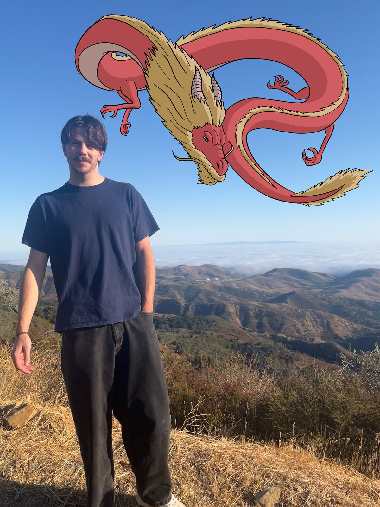

Phillip (Gavin) Jones
Artist Statement
I make traditional and digital drawings and paintings, and short digital animations, in pencil, marker, paint, Procreate, and Photoshop. I'm interested in concept art, character design, background painting, prop design, storyboarding, and the rest of animation pre-production.
I'm drawn to real stories from history and to historical fiction, especially European and American history, Indigenous stories, and science and natural history. I care most about the stories that are lesser known, and I want to tell ones that mirror the problems of today, including the role capitalism and U.S. imperialism have played in shaping the modern world.
I want people to notice the detail in my work, the accuracy to historical reference, and designs that feel believable. My style sits between realism and 2D hand-drawn animation.
Education
- 2026 to 2027
- San José State University, San Jose, CA
BA, Studio Practice, Pictorial Art emphasis (in progress, expected May 2027) - 2022 to 2024
- Santa Barbara City College, Santa Barbara, CA
Coursework in Animation, Interactive Technology, Video Graphics and Special Effects, and Computer Science - 2020 to 2021
- Diablo Valley College, Pleasant Hill, CA
Coursework in Web Page, Digital/Multimedia, and Information Resources Design
Exhibitions
- 2024
- Student Exhibition, SBCC Campus Gallery, Santa Barbara, CA (group show, one work)
Media and Tools
Pencil, marker, ink, and paint · Procreate · Photoshop · HTML and CSS
Contact
- 412pjones@gmail.com
- @gavinj0nes
- linkedin.com/in/phillipjones02